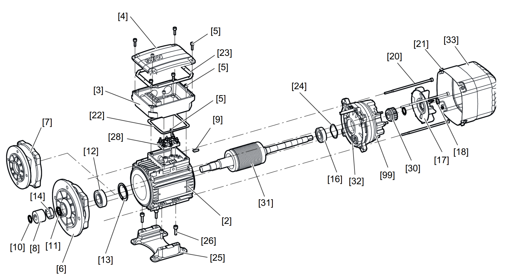
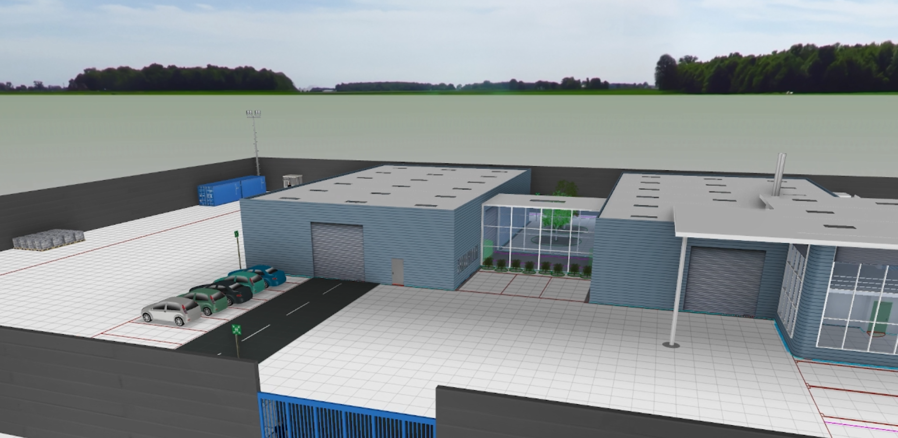
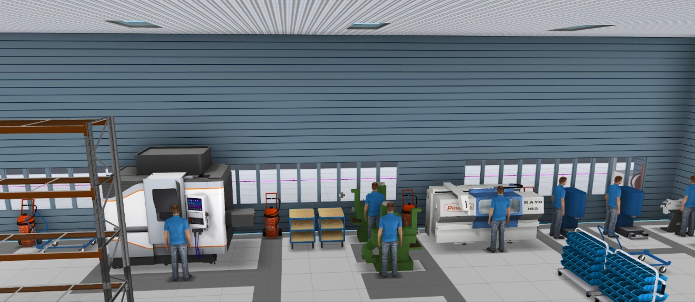

MORE PROJECTS
AC Motor Simulation & Manufacturing Planning
Project Overview
This project combined the 3D modelling and simulation of an AC motor with manufacturing and factory-planning work. The motor assembly was developed and represented in SolidWorks, including its main mechanical components and assembly structure. The work then moved from the individual machine to the manufacturing environment, using EMA and visTABLE to represent and evaluate the production layout. Factory-level visualisations were used to communicate the arrangement of buildings, production areas, equipment and working spaces. The project therefore connected product-level CAD work with manufacturing-system planning. It provided a practical view of how a mechanical product and its production environment can be considered together during engineering planning.
Project Evidence
Selected CAD, assembly and manufacturing-planning visuals from the project.



